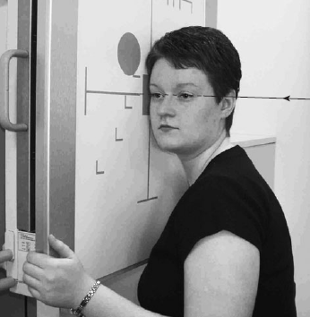

Paranasal Sinuses(Lateral)
Centering point:A horizontal central ray should be employed to demonstrate
fluid levels.
The tube should have been centred previously to the Bucky,
such that the central ray will now be centred to a point 2.5cm
posterior to the outer canthus of the eye.

Cassette Size:24cm x 30cm (12 x 10 ins)
Landscape
Exposure Factors:70kVp on
20mAs
FFD:100cm
Bucky/Grid:Moving or Stationary Grid
Filter:No
Collimation:Collimate to include the sinuses
Pathologies:fluid in sinuses, sinusitis
Position of patient and cassette
- The patient sits facing the vertical Bucky or skull unit cassette
holder. The head is then rotated, such that the median sagittal
plane is parallel to the Bucky and the inter-orbital line is
perpendicular to the Bucky.
- The shoulders may be rotated slightly to allow the correct
position to be attained. The patient may grip the Bucky for
stability.
- The head and Bucky heights are adjusted so that the centre of
the Bucky is 2.5 cm along the orbito-meatal line from the
outer canthus of the eye.
- Position an 18 � 24-cm cassette longitudinally in the erect
Bucky, such that its lower border is 2.5 cm below the level of
the upper teeth.